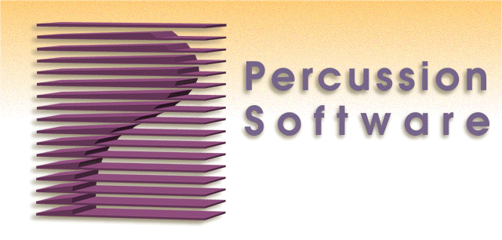

External APIs are also provided. These classes are used by remote clients, to access the server, define applications on it, etc. The main external interfaces are the object store, cataloger and administration client. At this time, only Percussion tools such as the Designer client should actually use these APIs. Furthermore, they should not be provided for public consumption (eg, documented, etc.).
For more information on the server and its components, review the package summaries listed above.
|  |